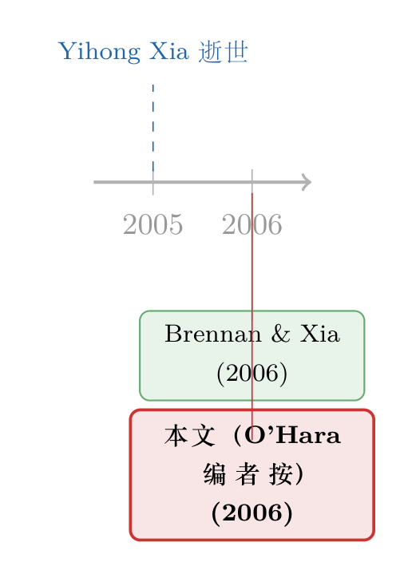

七百一十七页上的一段话：一篇没有数据的 RFS「论文」
本文读的是 O'Hara (2006, Review of Financial Studies)——但严格说，它不是一篇论文，而是一段编者按 (A Note from the Editor)。RFS 主编 Maureen O'Hara 在期刊第 19 卷第 3 期开篇，用不到两百个英文单词，为 2005 年 8 月 6 日英年早逝的沃顿教授 Yihong Xia 写下了一段悼词。没有数据，没有回归，没有识别策略；可它仍然被印上了卷号、页码（第 717 页）和一个独立的 DOI，像一篇真正的文章那样，被永久地编进了这本顶刊。
1 一个奇怪的检索结果
如果你像往常一样，在 RFS 的目录里按图索骥，想找一篇关于「外汇风险」或「跨期资产配置」的实证文章，你大概会顺手点开第 19 卷第 3 期。然后你会撞上一件怪事：这一期的第一篇「文章」只有一段话长，作者署名 Maureen O'Hara，标题平淡得近乎潦草——A Note from the Editor。
它没有摘要，没有引言，没有图表。可它该有的「外壳」一样不少：版权页写着「© The Author 2006」，底下端端正正地挂着 doi:10.1093/rfs/hhj042。换句话说，编辑部郑重其事地把这段话当成一篇正式出版物来对待——它会被引用、被存档、被一个挪威商学院的用户在 2026 年 5 月的某天下载下来（页脚老老实实地记下了这件事）。
这就带来一个我们平时从不会问的问题：一篇没有任何研究内容的「论文」，到底在说什么？
先把丑话说在前面。这不是一篇可供「识别策略 / 数据 / 主要结果」三段式拆解的研究论文。本文里既没有 DiD，也没有 IV，更没有可以报告的系数或 t 值。强行套用 paper review 的模板，只会逼出一堆编造的数字——而那恰恰是我最不想做的事。所以下面这篇评述，读的是这段话本身，以及它背后那个被它一笔带过、却分量极重的名字。
2 这段话到底写了什么
把 O'Hara 这段话拆开，信息其实只有四条，但每一条都掷地有声：
- 一个人走了。 Yihong Xia 教授于 2005 年 8 月 6 日去世，「too short academic career」——一段太过短暂的学术生涯。
- 她留下了很多。 这一期里那篇与 Michael Brennan 合作的文章，「is but one of the many important articles that she wrote」——只是她众多重要论文中的一篇。
- 主编亲自接的稿。 O'Hara 写道，她「pleased to accept this article for the RFS」，却又对这样一段「成就与希望」戛然而止感到「enormous regret」。
- 一个共同体在哀悼。 编委会向她的家人、向 Brennan、向沃顿的同事以及「整个金融学界」（the finance profession at large）致以哀悼。
首先要承认，这段话写得克制。它没有铺陈生平，没有罗列奖项，甚至没有点出那篇合作论文的标题。但真正关键的一步，恰恰藏在那句「I was pleased to accept this article」里。
3 真正打动人的，是「接受 / 遗憾」的并置
接着，一个自然的问题是：主编为什么要专门强调「我很高兴接受了这篇稿子」？
在顶刊的语境里，「accept」是一个有重量的动词。RFS 的拒稿率高得吓人，一篇文章从投稿到「接受」，往往要熬过两三年的审稿、修改、再修改。主编说「我很高兴接受了它」，等于在说：这篇文章经得起最严苛的同行评议，它配得上这本期刊。 这是学界能给一位研究者的、最朴素也最硬核的认可。
然后，反转出现了。紧接着这份职业上的肯定，O'Hara 写下的不是祝贺，而是「enormous regret」——巨大的遗憾。一边是「我作为主编，专业地判断你的工作足够好」；另一边是「可你已经看不到它印出来了」。这两句话贴在一起，比任何煽情的讣告都更有力量：它用学术共同体最日常、最理性的那套语言（接受、出版、引用），框住了一件最无法理性化的事——一个正处在上升期的人，突然不在了。
这，就是这段话的核心。它不是在抒情，而是在用学术界自己的「货币」给一位同行结算：你的工作，我们收下了；你的离开，我们记住了。
4 那篇「only one of many」的文章
但真正让这段悼词不至于沦为一句客套的，是那句轻描淡写的「her article with Michael Brennan appearing in this issue」。
这篇与 Brennan 合作、刊于同期 RFS 的文章，是 Brennan and Xia (2006), International Capital Markets and Foreign Exchange Risk——一篇关于国际资本市场与外汇风险 (foreign exchange risk) 的资产定价文章。O'Hara 特意点明，它「只是她众多重要论文中的一篇」。
为什么这句话重要？因为它把读者的视线从「讣告」引向了「遗产」。Brennan 与 Xia 这对组合，长期耕耘在跨期投资组合选择 (intertemporal portfolio choice)、通胀与利率风险、以及国际资产定价这几条线上。一个把外汇风险写进国际投资者最优配置的框架，本身就指向了一个至今仍然滚烫的问题：当资本可以跨境流动，汇率的不确定性如何重新定价了全球投资者手里的每一份资产？
这条线，今天读来一点都不过时。汇率与资产价格之间那根看不见的传声筒（可参见《汇率，是股市之间那根看不见的传声筒》），汇率里那块「怎么也找不到」的风险溢价（可参见《汇率里那块「找不到」的风险溢价》），乃至外资持有人对一国市场到底是「蝗虫」还是「活水」（可参见《外资真是「蝗虫」吗？》）——这些今天的研究，脚下踩着的正是 Brennan-Xia 那一代人铺下的地基。
5 文献脉络：一条「人」的脉络
通常这一节，我会画出「早期工作 → 关键论文 → 本文位置」的演进图。可这一次，能从原文里干净地考据出的年份，只有两个：2005（Xia 去世）与 2006（这篇编者按、以及那篇 Brennan-Xia 合作文章的出版年）。我不会为了凑满一条时间线，去编造任何一个并不真实出现的引用或年份——那样做，恰恰背叛了这段悼词所代表的那种学术诚实。
所以下面这条脉络很短，也很诚实。它讲的不是某个理论的演进，而是一个人的工作如何被这本期刊接住、并被郑重地记下来。

6 评论与延伸（Q&A + 研究方向）
(a) 几个可能的疑问
Q：一段两百字的悼词，凭什么配得上一个 DOI 和一个独立页码？
因为 DOI 的作用是「让任何被正式出版的内容可被永久、唯一地定位」，它不区分内容是定理还是悼词。给编者按一个 DOI，反而体现了一种制度上的认真：哪怕只是一段话，只要它进入了出版记录，就该被同等地存档与引用。从这个角度看，这个 DOI 本身就是对 Xia 的一种尊重。
Q：这能算「O'Hara 的论文」吗？把它计入她的发表列表合适吗？
不太合适，也没人会这么算。它的 author 字段写的是「The Author」（即 O'Hara 以主编身份执笔），但其文体是编者按 (editorial note)，学术界普遍不把这类悼词、编者按计入研究产出。它的价值不在「贡献了知识」，而在「记录了共同体的态度」。
Q：为什么不直接写明那篇 Brennan-Xia 文章的标题？
这是顶刊编者按的惯例——点到为止，把篇幅留给「人」而非「作品」。读者若想找那篇文章，翻到同一期目录即可。这种克制本身也是一种风格：悼词的主语是 Xia，而不是某一篇具体的论文。
Q：这段话对今天做国际资产定价的人有什么实际意义吗？
直接的实证意义几乎没有。但它提醒我们，Brennan-Xia 这条「外汇风险 + 跨期配置」的线索是一份未竟的事业。一个研究者突然离场，往往意味着某条本可以走得更远的路被中断了——后来者接不接得上、怎么接，本身就是个值得想的问题。
Q：把这种「非论文」收进顶刊，会不会稀释期刊的学术性？
不会。编者按、勘误 (corrigendum)、撤稿声明 (retraction notice) 这类「非研究内容」一直是期刊的有机组成部分（这个博客就评过 JFE 的勘误与撤稿，例如《一篇被作者亲手撤回的 JFE》）。它们记录的是学术共同体如何自我修正、自我维系——这恰恰是一本期刊「学术性」的另一面。
(b) 几个可能的研究问题与提案
1. 学者早逝对一条研究线的「中断效应」
【经济故事】当一位活跃的核心作者突然离场，与他/她合作的网络、被他/她推进的子领域，会不会出现可观测的「减速」？这本质上是把「知识生产」当成一个依赖关键人物的网络来研究。
【可行性】中。数据上可用 Web of Science / OpenAlex 的作者—引用网络，识别上可借「突发死亡」作为外生冲击，比较合作者群体在事件前后的发表与引用轨迹（类似 Azoulay 等人对「超级明星」科学家去世的研究思路）。难点在样本稀少、且需仔细处理选择性。
2. 「外汇风险 + 跨期配置」这条线后来去了哪里
【经济故事】Brennan-Xia 把汇率风险写进国际投资者的最优组合。二十年过去，这条线被需求体系资产定价 (demand-system asset pricing) 等新框架吸收到了什么程度？哪些当年的洞见被保留、哪些被推翻？
【可行性】高。这是一篇可做的文献综述+再检验：用现成的国际股债与汇率数据，重估当年模型的核心预测在样本外是否成立。识别上不算干净（多为相关性），但作为「梳理一条脉络」的工作完全 doable。
3. 把「外汇风险」这条线延伸到公司债与外资持有人
【经济故事】Brennan-Xia 关心的是股票与汇率。一个自然的延伸是：当外国投资者持有一国的公司债，汇率风险如何进入信用利差与债券流动性？这正好接上我自己关心的「外资持有人 × 公司债流动性」这条线。
【可行性】中。美国侧可用 TRACE + 13F/eMAXX 类持有人数据，跨境侧可用 TIC 或各国央行的持有人明细。识别难点在于把「汇率敞口」与「信用 / 流动性敞口」干净地分开，可能需要借助货币对冲成本（CIP 偏离）作为工具。
参考文献
- O'Hara, M. (2006). A Note from the Editor. Review of Financial Studies 19(3), 717.
- Brennan, M. J., & Xia, Y. (2006). International Capital Markets and Foreign Exchange Risk. Review of Financial Studies 19(3).
最后说说我的判断。把这段话当「论文」来评述，本身是个尴尬的任务——它没有可供攻击的识别假设，也没有可供复制的结果。但正因为如此，它反而逼着人去想一个平时被忽略的问题：一本顶级期刊，除了生产知识，还在维系一个共同体。 这段两百字的编者按，连同它一本正经的 DOI 和页码，就是这种维系的物证。
要说「贡献」，它的贡献是把 Yihong Xia 的名字以最正式的方式刻进了 RFS 的档案；要说「遗憾」，则是它太短了——它点到了「众多重要论文」，却没替不熟悉她的后来者留下一份哪怕简短的索引。我真正想看到的，不是更长的悼词，而是有人去认真梳理 Brennan-Xia 那条「外汇风险 × 跨期配置」的线索，看看它在二十年后的资产定价版图里，究竟长成了什么样子。那，才是对一段「太短的学术生涯」最像样的回应。